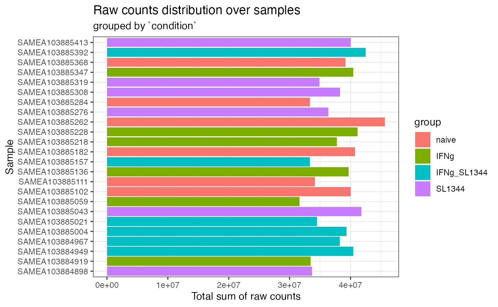
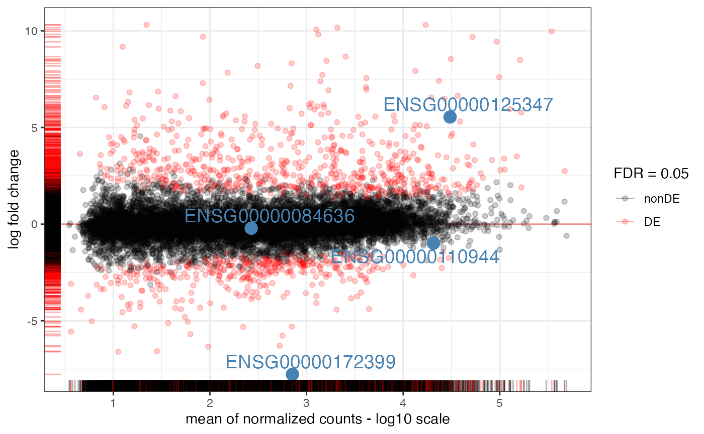
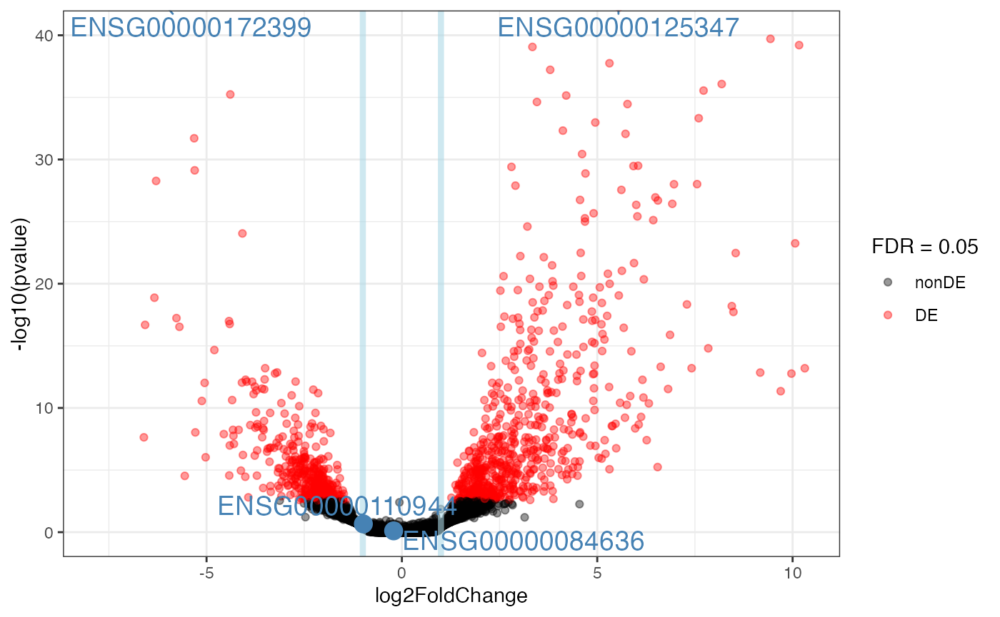
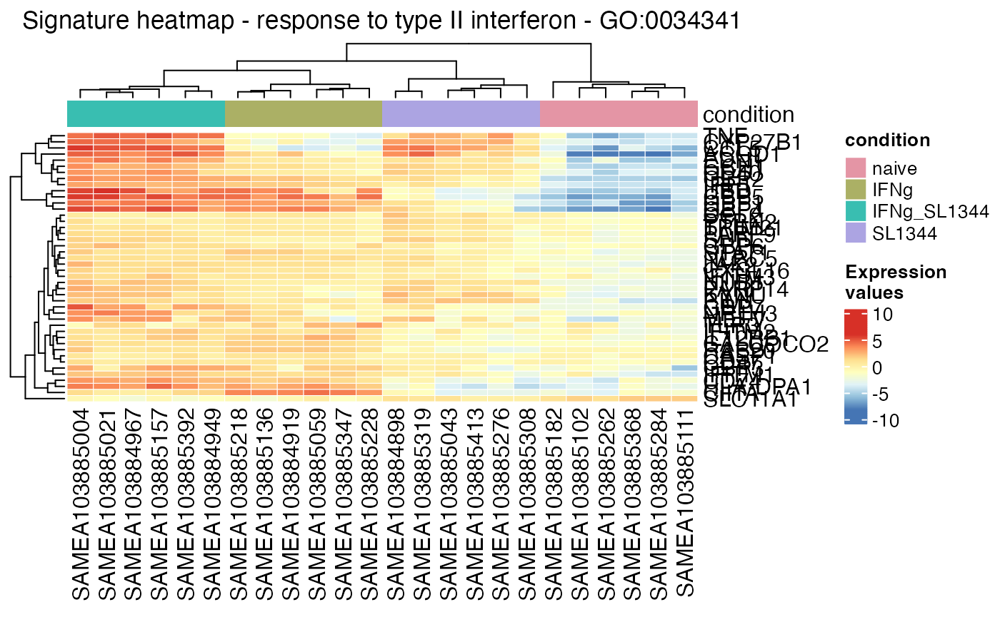
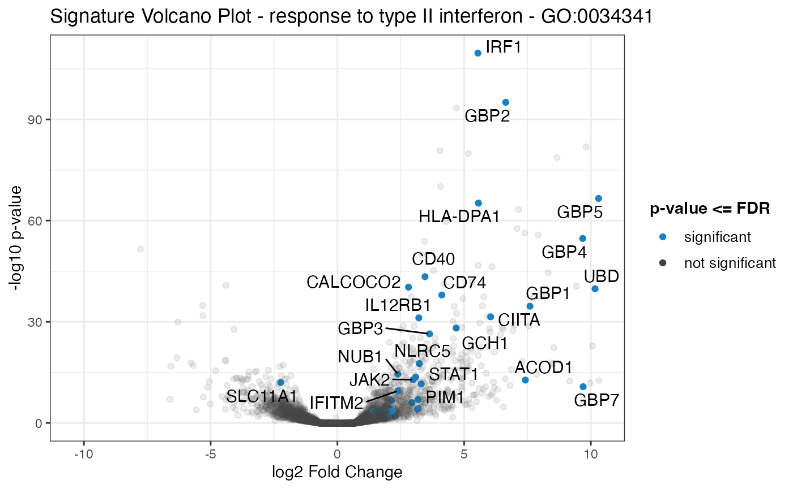
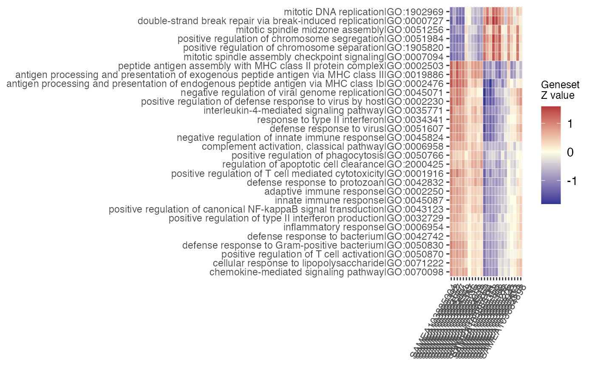

library("BIUMmisc")
#> Compiled date: 2024-07-01
Last edited: 2024-07-01
library("DESeq2")
#> Loading required package: S4Vectors
#> Loading required package: stats4
#> Loading required package: BiocGenerics
#>
#> Attaching package: 'BiocGenerics'
#> The following objects are masked from 'package:stats':
#>
#> IQR, mad, sd, var, xtabs
#> The following objects are masked from 'package:base':
#>
#> anyDuplicated, aperm, append, as.data.frame, basename, cbind,
#> colnames, dirname, do.call, duplicated, eval, evalq, Filter, Find,
#> get, grep, grepl, intersect, is.unsorted, lapply, Map, mapply,
#> match, mget, order, paste, pmax, pmax.int, pmin, pmin.int,
#> Position, rank, rbind, Reduce, rownames, sapply, setdiff, table,
#> tapply, union, unique, unsplit, which.max, which.min
#>
#> Attaching package: 'S4Vectors'
#> The following object is masked from 'package:utils':
#>
#> findMatches
#> The following objects are masked from 'package:base':
#>
#> expand.grid, I, unname
#> Loading required package: IRanges
#> Loading required package: GenomicRanges
#> Loading required package: GenomeInfoDb
#> Loading required package: SummarizedExperiment
#> Loading required package: MatrixGenerics
#> Loading required package: matrixStats
#>
#> Attaching package: 'MatrixGenerics'
#> The following objects are masked from 'package:matrixStats':
#>
#> colAlls, colAnyNAs, colAnys, colAvgsPerRowSet, colCollapse,
#> colCounts, colCummaxs, colCummins, colCumprods, colCumsums,
#> colDiffs, colIQRDiffs, colIQRs, colLogSumExps, colMadDiffs,
#> colMads, colMaxs, colMeans2, colMedians, colMins, colOrderStats,
#> colProds, colQuantiles, colRanges, colRanks, colSdDiffs, colSds,
#> colSums2, colTabulates, colVarDiffs, colVars, colWeightedMads,
#> colWeightedMeans, colWeightedMedians, colWeightedSds,
#> colWeightedVars, rowAlls, rowAnyNAs, rowAnys, rowAvgsPerColSet,
#> rowCollapse, rowCounts, rowCummaxs, rowCummins, rowCumprods,
#> rowCumsums, rowDiffs, rowIQRDiffs, rowIQRs, rowLogSumExps,
#> rowMadDiffs, rowMads, rowMaxs, rowMeans2, rowMedians, rowMins,
#> rowOrderStats, rowProds, rowQuantiles, rowRanges, rowRanks,
#> rowSdDiffs, rowSds, rowSums2, rowTabulates, rowVarDiffs, rowVars,
#> rowWeightedMads, rowWeightedMeans, rowWeightedMedians,
#> rowWeightedSds, rowWeightedVars
#> Loading required package: Biobase
#> Welcome to Bioconductor
#>
#> Vignettes contain introductory material; view with
#> 'browseVignettes()'. To cite Bioconductor, see
#> 'citation("Biobase")', and for packages 'citation("pkgname")'.
#>
#> Attaching package: 'Biobase'
#> The following object is masked from 'package:MatrixGenerics':
#>
#> rowMedians
#> The following objects are masked from 'package:matrixStats':
#>
#> anyMissing, rowMedians
library("topGO")
#> Loading required package: graph
#> Loading required package: GO.db
#> Loading required package: AnnotationDbi
#> Loading required package: SparseM
#>
#> groupGOTerms: GOBPTerm, GOMFTerm, GOCCTerm environments built.
#>
#> Attaching package: 'topGO'
#> The following object is masked from 'package:IRanges':
#>
#> members
library("org.Hs.eg.db")
#>
# library("pcaExplorer")
# library("ideal")
library("GeneTonic")Before running DE steps
- Load the expression data as
DESeqDataSetobject and create the associated annotation table.
Similar to Basic Protocol 3, load first the required packages, and create the fundamentalDESeqDataSetobject to be used for the analysis (using ENSEMBL identifiers) - optionally, one can filter the set of lowly expressed genes as specified in the chunk below. Generate the corresponding annotation table fordds_macrophage, and store that asanno_df.
# Loading the packages
library("pcaExplorer")
#> Welcome to pcaExplorer v2.31.0
#>
#> If you use pcaExplorer in your work, please cite:
#>
#> Federico Marini, Harald Binder
#> pcaExplorer: an R/Bioconductor package for interacting with RNA-seq principal components
#> BMC Bioinformatics, 2019 - https://doi.org/10.1186/s12859-019-2879-1
library("ideal")
#> Welcome to ideal v1.29.0
#>
#> If you use ideal in your work, please cite:
#>
#> Federico Marini, Jan Linke, Harald Binder
#> ideal: an R/Bioconductor package for Interactive Differential Expression Analysis
#> BMC Bioinformatics, 2020 - https://doi.org/10.1186/s12859-020-03819-5
#>
#> Attaching package: 'ideal'
#> The following object is masked from 'package:BIUMmisc':
#>
#> sepguesser
library("GeneTonic")
# Loading the data
library("macrophage")
library("DESeq2")
data("gse", package = "macrophage")
dds_macrophage <- DESeqDataSet(gse, design = ~line + condition)
#> using counts and average transcript lengths from tximeta
# one can also now use
dds_macrophage <- dds_gencode_to_ensembl(dds_macrophage)
# Changing the ids, removing the GENCODE-specific suffix
# rownames(dds_macrophage) <- substr(rownames(dds_macrophage), 1, 15)
# dds_macrophage
# Filtering low expressed features
keep <- rowSums(counts(dds_macrophage) >= 10) >= 6
dds_macrophage <- dds_macrophage[keep, ]
dds_macrophage
#> class: DESeqDataSet
#> dim: 17806 24
#> metadata(7): tximetaInfo quantInfo ... txdbInfo version
#> assays(3): counts abundance avgTxLength
#> rownames(17806): ENSG00000000003 ENSG00000000419 ... ENSG00000285982
#> ENSG00000285994
#> rowData names(3): gene_id SYMBOL gencode_id
#> colnames(24): SAMEA103885102 SAMEA103885347 ... SAMEA103885308
#> SAMEA103884949
#> colData names(15): names sample_id ... condition line
# Construct the annotation data frame
library("org.Hs.eg.db")
anno_df <- get_annotation_orgdb(dds = dds_macrophage,
orgdb_species = "org.Hs.eg.db",
idtype = "ENSEMBL")
#> 'select()' returned 1:many mapping between keys and columns
library("biomaRt")
mart <- useMart(biomart="ENSEMBL_MART_ENSEMBL", dataset="hsapiens_gene_ensembl")
anns <- getBM(attributes = c("ensembl_gene_id", "external_gene_name", "description"),
filters = "ensembl_gene_id",
# filters = "external_gene_name",
values = rownames(dds_macrophage),
mart = mart)
plot_totcounts(dds_macrophage, group = "condition")
extended_anno <- fortify_annotations(anno_df_1 = anno_df,
anno_df_2 = anns,
dds = dds_macrophage)
#> Found 2288 features with value NA in column gene_name (anno_df_1)
#> Found 137 features with value NA in column external_gene_name (anno_df_2)
#> Trying to resolve missing info in gene_name (anno_df_1) with info from external_gene_name (anno_df_2)...
#> Found 127 features with value NA in the resolved gene name column
#> You might want to add/edit additionally this annotation table...
#> Updated rowData slot of the dds object by adding columns: anno_gene_id, anno_gene_name, anno_description
extended_anno$anno_df |> head()
#> gene_id gene_name external_gene_name
#> ENSG00000000003 ENSG00000000003 TSPAN6 TSPAN6
#> ENSG00000000419 ENSG00000000419 DPM1 DPM1
#> ENSG00000000457 ENSG00000000457 SCYL3 SCYL3
#> ENSG00000000460 ENSG00000000460 FIRRM FIRRM
#> ENSG00000000938 ENSG00000000938 FGR FGR
#> ENSG00000000971 ENSG00000000971 CFH CFH
#> description
#> ENSG00000000003 tetraspanin 6 [Source:HGNC Symbol;Acc:HGNC:11858]
#> ENSG00000000419 dolichyl-phosphate mannosyltransferase subunit 1, catalytic [Source:HGNC Symbol;Acc:HGNC:3005]
#> ENSG00000000457 SCY1 like pseudokinase 3 [Source:HGNC Symbol;Acc:HGNC:19285]
#> ENSG00000000460 FIGNL1 interacting regulator of recombination and mitosis [Source:HGNC Symbol;Acc:HGNC:25565]
#> ENSG00000000938 FGR proto-oncogene, Src family tyrosine kinase [Source:HGNC Symbol;Acc:HGNC:3697]
#> ENSG00000000971 complement factor H [Source:HGNC Symbol;Acc:HGNC:4883]
extended_anno$dds
#> class: DESeqDataSet
#> dim: 17806 24
#> metadata(7): tximetaInfo quantInfo ... txdbInfo version
#> assays(3): counts abundance avgTxLength
#> rownames(17806): ENSG00000000003 ENSG00000000419 ... ENSG00000285982
#> ENSG00000285994
#> rowData names(6): gene_id SYMBOL ... anno_gene_name anno_description
#> colnames(24): SAMEA103885102 SAMEA103885347 ... SAMEA103885308
#> SAMEA103884949
#> colData names(15): names sample_id ... condition line
tbl_normcounts <- deseq_normcounts_with_info(dds = dds_macrophage,
extended_anno_df = extended_anno$anno_df)
#> using 'avgTxLength' from assays(dds), correcting for library size
tbl_TPMs <- deseq_tpm_with_info(dds = dds_macrophage,
extended_anno_df = extended_anno$anno_df)Running the DE steps
Creating the DE results themselves…
dds_macrophage
#> class: DESeqDataSet
#> dim: 17806 24
#> metadata(7): tximetaInfo quantInfo ... txdbInfo version
#> assays(3): counts abundance avgTxLength
#> rownames(17806): ENSG00000000003 ENSG00000000419 ... ENSG00000285982
#> ENSG00000285994
#> rowData names(3): gene_id SYMBOL gencode_id
#> colnames(24): SAMEA103885102 SAMEA103885347 ... SAMEA103885308
#> SAMEA103884949
#> colData names(15): names sample_id ... condition line
design(dds_macrophage)
#> ~line + condition
dds_macrophage <- DESeq(dds_macrophage)
#> estimating size factors
#> using 'avgTxLength' from assays(dds), correcting for library size
#> estimating dispersions
#> gene-wise dispersion estimates
#> mean-dispersion relationship
#> final dispersion estimates
#> fitting model and testing
resultsNames(dds_macrophage)
#> [1] "Intercept" "line_eiwy_1_vs_diku_1"
#> [3] "line_fikt_3_vs_diku_1" "line_ieki_2_vs_diku_1"
#> [5] "line_podx_1_vs_diku_1" "line_qaqx_1_vs_diku_1"
#> [7] "condition_IFNg_vs_naive" "condition_IFNg_SL1344_vs_naive"
#> [9] "condition_SL1344_vs_naive"
myresuSet_macrophage <- list()
myresuSet_macrophage <-
create_DEresults(resuSet = myresuSet_macrophage,
dds_obj = dds_macrophage,
contrast_name = "condition_IFNg_vs_naive",
FDR = 0.05,
extended_anno_df = extended_anno$anno_df,
species = "Homo_sapiens"
)
#> Storing set of results in the element `condition_IFNg_vs_naive`...
#> Extracting results...
#> Performing LFC shrinkage...
#> using 'apeglm' for LFC shrinkage. If used in published research, please cite:
#> Zhu, A., Ibrahim, J.G., Love, M.I. (2018) Heavy-tailed prior distributions for
#> sequence count data: removing the noise and preserving large differences.
#> Bioinformatics. https://doi.org/10.1093/bioinformatics/bty895
#> Summary MAplot...
#> Extracting tables...
#> Extracting DEtables...
#> Generating interactive DEtable...
myresuSet_macrophage <-
create_DEresults(resuSet = myresuSet_macrophage,
dds_obj = dds_macrophage,
contrast_name = "condition_IFNg_vs_naive",
lfc_threshold = 0.6,
FDR = 0.05,
extended_anno_df = extended_anno$anno_df,
species = "Homo_sapiens",
name_res_entry = "ifng-naive-lfc0.6"
)
#> Storing set of results in the element `ifng-naive-lfc0.6`...
#> Extracting results...
#> Performing LFC shrinkage...
#> using 'apeglm' for LFC shrinkage. If used in published research, please cite:
#> Zhu, A., Ibrahim, J.G., Love, M.I. (2018) Heavy-tailed prior distributions for
#> sequence count data: removing the noise and preserving large differences.
#> Bioinformatics. https://doi.org/10.1093/bioinformatics/bty895
#> Summary MAplot...
#> Extracting tables...
#> Extracting DEtables...
#> Generating interactive DEtable...
myresuSet_macrophage <-
create_DEresults(resuSet = myresuSet_macrophage,
dds_obj = dds_macrophage,
contrast_name = "condition_IFNg_vs_naive",
lfc_threshold = 1,
FDR = 0.05,
extended_anno_df = extended_anno$anno_df,
species = "Homo_sapiens",
name_res_entry = "ifng-naive-lfc1"
)
#> Storing set of results in the element `ifng-naive-lfc1`...
#> Extracting results...
#> Performing LFC shrinkage...
#> using 'apeglm' for LFC shrinkage. If used in published research, please cite:
#> Zhu, A., Ibrahim, J.G., Love, M.I. (2018) Heavy-tailed prior distributions for
#> sequence count data: removing the noise and preserving large differences.
#> Bioinformatics. https://doi.org/10.1093/bioinformatics/bty895
#> Summary MAplot...
#> Extracting tables...
#> Extracting DEtables...
#> Generating interactive DEtable...
genes_of_interest <- c(
"ENSG00000125347", # IRF1
"ENSG00000110944", # IL23A
"ENSG00000084636", # COL16A1
"ENSG00000172399" # MYOZ2
)
plot_ma(res_obj = myresuSet_macrophage$`ifng-naive-lfc1`$res_DESeq,
intgenes = genes_of_interest)
plot_volcano(res_obj = myresuSet_macrophage$`ifng-naive-lfc1`$res_DESeq,
ylim_up = 40,
intgenes = genes_of_interest)
# TODO: adjust the y limit
# TODO: add text ready to be ggplotlified?After the DE steps: functional enrichment
extended_anno_df <- extended_anno$anno_df
expressedInAssay <- (rowSums(assay(dds_macrophage))>0)
geneUniverseExprENS <- rownames(dds_macrophage)[expressedInAssay]
geneUniverseExpr <- extended_anno_df$gene_name[match(geneUniverseExprENS, extended_anno_df$gene_id)]We iterate on all contrasts in the myresuSet object
for(i in names(myresuSet_macrophage)) {
message(i)
if(nrow(myresuSet_macrophage[[i]][["tbl_res_DE"]]) > 0) {
myresuSet_macrophage[[i]][["topGO_tbl"]] <-
topGOtable(DEgenes = myresuSet_macrophage[[i]][["tbl_res_DE"]]$gene_name,
BGgenes = geneUniverseExpr,
ontology = "BP",
geneID = "symbol",
addGeneToTerms=TRUE,
topTablerows = 500,
mapping = "org.Hs.eg.db")
}
}
#> condition_IFNg_vs_naive
#>
#> Building most specific GOs .....
#> ( 11445 GO terms found. )
#>
#> Build GO DAG topology ..........
#> ( 14788 GO terms and 33231 relations. )
#>
#> Annotating nodes ...............
#> ( 13154 genes annotated to the GO terms. )
#>
#> -- Elim Algorithm --
#>
#> the algorithm is scoring 6114 nontrivial nodes
#> parameters:
#> test statistic: fisher
#> cutOff: 0.01
#>
#> Level 19: 2 nodes to be scored (0 eliminated genes)
#>
#> Level 18: 3 nodes to be scored (0 eliminated genes)
#>
#> Level 17: 9 nodes to be scored (0 eliminated genes)
#>
#> Level 16: 32 nodes to be scored (0 eliminated genes)
#>
#> Level 15: 49 nodes to be scored (117 eliminated genes)
#>
#> Level 14: 66 nodes to be scored (172 eliminated genes)
#>
#> Level 13: 118 nodes to be scored (293 eliminated genes)
#>
#> Level 12: 270 nodes to be scored (451 eliminated genes)
#>
#> Level 11: 491 nodes to be scored (754 eliminated genes)
#>
#> Level 10: 730 nodes to be scored (1400 eliminated genes)
#>
#> Level 9: 871 nodes to be scored (1886 eliminated genes)
#>
#> Level 8: 933 nodes to be scored (2732 eliminated genes)
#>
#> Level 7: 917 nodes to be scored (3937 eliminated genes)
#>
#> Level 6: 779 nodes to be scored (4746 eliminated genes)
#>
#> Level 5: 468 nodes to be scored (5476 eliminated genes)
#>
#> Level 4: 262 nodes to be scored (5732 eliminated genes)
#>
#> Level 3: 96 nodes to be scored (6108 eliminated genes)
#>
#> Level 2: 17 nodes to be scored (8342 eliminated genes)
#>
#> Level 1: 1 nodes to be scored (8342 eliminated genes)
#>
#> -- Classic Algorithm --
#>
#> the algorithm is scoring 6114 nontrivial nodes
#> parameters:
#> test statistic: fisher
#> Warning in topGOtable(DEgenes =
#> myresuSet_macrophage[[i]][["tbl_res_DE"]]$gene_name, : NAs introduced by
#> coercion
#> ifng-naive-lfc0.6
#>
#> Building most specific GOs .....
#> ( 11445 GO terms found. )
#>
#> Build GO DAG topology ..........
#> ( 14788 GO terms and 33231 relations. )
#>
#> Annotating nodes ...............
#> ( 13154 genes annotated to the GO terms. )
#>
#> -- Elim Algorithm --
#>
#> the algorithm is scoring 5607 nontrivial nodes
#> parameters:
#> test statistic: fisher
#> cutOff: 0.01
#>
#> Level 19: 2 nodes to be scored (0 eliminated genes)
#>
#> Level 18: 3 nodes to be scored (0 eliminated genes)
#>
#> Level 17: 8 nodes to be scored (12 eliminated genes)
#>
#> Level 16: 29 nodes to be scored (19 eliminated genes)
#>
#> Level 15: 44 nodes to be scored (118 eliminated genes)
#>
#> Level 14: 58 nodes to be scored (220 eliminated genes)
#>
#> Level 13: 100 nodes to be scored (326 eliminated genes)
#>
#> Level 12: 228 nodes to be scored (400 eliminated genes)
#>
#> Level 11: 421 nodes to be scored (709 eliminated genes)
#>
#> Level 10: 655 nodes to be scored (1387 eliminated genes)
#>
#> Level 9: 775 nodes to be scored (2159 eliminated genes)
#>
#> Level 8: 857 nodes to be scored (2811 eliminated genes)
#>
#> Level 7: 864 nodes to be scored (3608 eliminated genes)
#>
#> Level 6: 749 nodes to be scored (4700 eliminated genes)
#>
#> Level 5: 450 nodes to be scored (5276 eliminated genes)
#>
#> Level 4: 253 nodes to be scored (6090 eliminated genes)
#>
#> Level 3: 93 nodes to be scored (7118 eliminated genes)
#>
#> Level 2: 17 nodes to be scored (7584 eliminated genes)
#>
#> Level 1: 1 nodes to be scored (7584 eliminated genes)
#>
#> -- Classic Algorithm --
#>
#> the algorithm is scoring 5607 nontrivial nodes
#> parameters:
#> test statistic: fisher
#> Warning in topGOtable(DEgenes =
#> myresuSet_macrophage[[i]][["tbl_res_DE"]]$gene_name, : NAs introduced by
#> coercion
#> ifng-naive-lfc1
#>
#> Building most specific GOs .....
#> ( 11445 GO terms found. )
#>
#> Build GO DAG topology ..........
#> ( 14788 GO terms and 33231 relations. )
#>
#> Annotating nodes ...............
#> ( 13154 genes annotated to the GO terms. )
#>
#> -- Elim Algorithm --
#>
#> the algorithm is scoring 5010 nontrivial nodes
#> parameters:
#> test statistic: fisher
#> cutOff: 0.01
#>
#> Level 19: 2 nodes to be scored (0 eliminated genes)
#>
#> Level 18: 3 nodes to be scored (0 eliminated genes)
#>
#> Level 17: 7 nodes to be scored (0 eliminated genes)
#>
#> Level 16: 25 nodes to be scored (26 eliminated genes)
#>
#> Level 15: 40 nodes to be scored (57 eliminated genes)
#>
#> Level 14: 46 nodes to be scored (87 eliminated genes)
#>
#> Level 13: 75 nodes to be scored (244 eliminated genes)
#>
#> Level 12: 194 nodes to be scored (310 eliminated genes)
#>
#> Level 11: 349 nodes to be scored (574 eliminated genes)
#>
#> Level 10: 561 nodes to be scored (972 eliminated genes)
#>
#> Level 9: 682 nodes to be scored (1505 eliminated genes)
#>
#> Level 8: 768 nodes to be scored (2174 eliminated genes)
#>
#> Level 7: 791 nodes to be scored (2817 eliminated genes)
#>
#> Level 6: 690 nodes to be scored (3303 eliminated genes)
#>
#> Level 5: 427 nodes to be scored (3956 eliminated genes)
#>
#> Level 4: 241 nodes to be scored (4122 eliminated genes)
#>
#> Level 3: 91 nodes to be scored (4619 eliminated genes)
#>
#> Level 2: 17 nodes to be scored (5149 eliminated genes)
#>
#> Level 1: 1 nodes to be scored (5149 eliminated genes)
#>
#> -- Classic Algorithm --
#>
#> the algorithm is scoring 5010 nontrivial nodes
#> parameters:
#> test statistic: fisher
#> Warning in topGOtable(DEgenes =
#> myresuSet_macrophage[[i]][["tbl_res_DE"]]$gene_name, : NAs introduced by
#> coercion
library("clusterProfiler")
#> clusterProfiler v4.13.0 For help: https://yulab-smu.top/biomedical-knowledge-mining-book/
#>
#> If you use clusterProfiler in published research, please cite:
#> T Wu, E Hu, S Xu, M Chen, P Guo, Z Dai, T Feng, L Zhou, W Tang, L Zhan, X Fu, S Liu, X Bo, and G Yu. clusterProfiler 4.0: A universal enrichment tool for interpreting omics data. The Innovation. 2021, 2(3):100141
#>
#> Attaching package: 'clusterProfiler'
#> The following object is masked from 'package:biomaRt':
#>
#> select
#> The following object is masked from 'package:AnnotationDbi':
#>
#> select
#> The following object is masked from 'package:IRanges':
#>
#> slice
#> The following object is masked from 'package:S4Vectors':
#>
#> rename
#> The following object is masked from 'package:stats':
#>
#> filter
for(i in names(myresuSet_macrophage)) {
message(i)
if(nrow(myresuSet_macrophage[[i]][["tbl_res_DE"]]) > 0) {
myresuSet_macrophage[[i]][["clupro_tbl"]] <-
enrichGO(
gene = myresuSet_macrophage[[i]][["tbl_res_DE"]]$gene_name,
universe = geneUniverseExpr,
keyType = "SYMBOL",
OrgDb = org.Hs.eg.db,
ont = "BP",
pAdjustMethod = "BH",
pvalueCutoff = 0.01,
qvalueCutoff = 0.05,
readable = FALSE)
}
}
#> condition_IFNg_vs_naive
#> ifng-naive-lfc0.6
#> ifng-naive-lfc1Wrapping up a DE report
transforming this into a gtl
gtl_macs_ifng_naive <- resuset_to_gtl(myresuSet_macrophage,
result_name = "ifng-naive-lfc0.6",
dds = dds_macrophage,
anno_df = extended_anno_df)
#> Found 500 gene sets in `topGOtableResult` object.
#> Converting for usage in GeneTonic...
#> ---------------------------------
#> ----- GeneTonicList object ------
#> ---------------------------------
#>
#> ----- dds object -----
#> Providing an expression object (as DESeqDataset) of 17806 features over 24 samples
#>
#> ----- res_de object -----
#> Providing a DE result object (as DESeqResults), 17806 features tested, 1870 found as DE
#> Upregulated: 1109
#> Downregulated: 761
#>
#> ----- res_enrich object -----
#> Providing an enrichment result object, 500 reported
#>
#> ----- annotation_obj object -----
#> Providing an annotation object of 17806 features with information on 4 identifier types
describe_gtl(gtl_macs_ifng_naive)
#> [1] "---------------------------------\n"
#> [2] "----- GeneTonicList object ------\n"
#> [3] "---------------------------------\n"
#> [4] "\n----- dds object -----\n"
#> [5] "Providing an expression object (as DESeqDataset) of 17806 features over 24 samples\n"
#> [6] "\n----- res_de object -----\n"
#> [7] "Providing a DE result object (as DESeqResults), 17806 features tested, 1870 found as DE\n"
#> [8] "Upregulated: 1109\n"
#> [9] "Downregulated: 761\n"
#> [10] "\n----- res_enrich object -----\n"
#> [11] "Providing an enrichment result object, 500 reported\n"
#> [12] "\n----- annotation_obj object -----\n"
#> [13] "Providing an annotation object of 17806 features with information on 4 identifier types\n"
vst_macrophage <- vst(dds_macrophage)
gs_heatmap(se = vst_macrophage,
gtl = gtl_macs_ifng_naive,
geneset_id = "GO:0034341",
cluster_columns = TRUE,
cluster_rows = TRUE,
anno_col_info = "condition"
)
signature_volcano(gtl = gtl_macs_ifng_naive,
geneset_id = "GO:0034341",
FDR = 0.05
)
#> Warning: ggrepel: 23 unlabeled data points (too many overlaps). Consider
#> increasing max.overlaps
gs_scoresheat(
mat = gs_scores(
se = vst_macrophage,
gtl = gtl_macs_ifng_naive),
n_gs = 30
)
exporting them all
exportr(myresuSet_macrophage,
out_file_prefix = "fedetest", out_folder = "dirtest")
#> Exporting the whole set for fedetest
#> fedetest --- condition_IFNg_vs_naive
#> Exporting results from DESeq...
#> dirtest/fedetest_condition_IFNg_vs_naive_tbl_res_DESeq.xlsx
#> Exporting results from topGO...
#> dirtest/fedetest_condition_IFNg_vs_naive_tbl_topGOres.xlsx
#> Exporting results from clusterProfiler...
#> dirtest/fedetest_condition_IFNg_vs_naive_tbl_cluPro.xlsx
#> fedetest --- ifng-naive-lfc0.6
#> Exporting results from DESeq...
#> dirtest/fedetest_ifng-naive-lfc0.6_tbl_res_DESeq.xlsx
#> Exporting results from topGO...
#> dirtest/fedetest_ifng-naive-lfc0.6_tbl_topGOres.xlsx
#> Exporting results from clusterProfiler...
#> dirtest/fedetest_ifng-naive-lfc0.6_tbl_cluPro.xlsx
#> fedetest --- ifng-naive-lfc1
#> Exporting results from DESeq...
#> dirtest/fedetest_ifng-naive-lfc1_tbl_res_DESeq.xlsx
#> Exporting results from topGO...
#> dirtest/fedetest_ifng-naive-lfc1_tbl_topGOres.xlsx
#> Exporting results from clusterProfiler...
#> dirtest/fedetest_ifng-naive-lfc1_tbl_cluPro.xlsxSession information
# BiocManager::version()
sessionInfo()
#> R version 4.4.1 (2024-06-14)
#> Platform: aarch64-apple-darwin20
#> Running under: macOS Sonoma 14.5
#>
#> Matrix products: default
#> BLAS: /Library/Frameworks/R.framework/Versions/4.4-arm64/Resources/lib/libRblas.0.dylib
#> LAPACK: /Library/Frameworks/R.framework/Versions/4.4-arm64/Resources/lib/libRlapack.dylib; LAPACK version 3.12.0
#>
#> locale:
#> [1] en_US.UTF-8/en_US.UTF-8/en_US.UTF-8/C/en_US.UTF-8/en_US.UTF-8
#>
#> time zone: UTC
#> tzcode source: internal
#>
#> attached base packages:
#> [1] stats4 stats graphics grDevices utils datasets methods
#> [8] base
#>
#> other attached packages:
#> [1] clusterProfiler_4.13.0 biomaRt_2.61.2
#> [3] macrophage_1.21.0 ideal_1.29.0
#> [5] pcaExplorer_2.31.0 GeneTonic_2.9.0
#> [7] org.Hs.eg.db_3.19.1 topGO_2.57.0
#> [9] SparseM_1.84 GO.db_3.19.1
#> [11] AnnotationDbi_1.67.0 graph_1.83.0
#> [13] DESeq2_1.45.0 SummarizedExperiment_1.35.1
#> [15] Biobase_2.65.0 MatrixGenerics_1.17.0
#> [17] matrixStats_1.3.0 GenomicRanges_1.57.1
#> [19] GenomeInfoDb_1.41.1 IRanges_2.39.0
#> [21] S4Vectors_0.43.0 BiocGenerics_0.51.0
#> [23] BIUMmisc_0.1.0
#>
#> loaded via a namespace (and not attached):
#> [1] GSEABase_1.67.0 progress_1.2.3 DT_0.33
#> [4] Biostrings_2.73.1 vctrs_0.6.5 digest_0.6.36
#> [7] png_0.1-8 shape_1.4.6.1 shinyBS_0.61.1
#> [10] registry_0.5-1 ggrepel_0.9.5 MASS_7.3-61
#> [13] pkgdown_2.0.9.9000 reshape2_1.4.4 httpuv_1.6.15
#> [16] foreach_1.5.2 qvalue_2.37.0 withr_3.0.0
#> [19] xfun_0.45 ggfun_0.1.5 survival_3.7-0
#> [22] memoise_2.0.1 gson_0.1.0 BiasedUrn_2.0.12
#> [25] systemfonts_1.1.0 ragg_1.3.2 tidytree_0.4.6
#> [28] GlobalOptions_0.1.2 gtools_3.9.5 prettyunits_1.2.0
#> [31] KEGGREST_1.45.1 promises_1.3.0 httr_1.4.7
#> [34] restfulr_0.0.15 rstudioapi_0.16.0 shinyAce_0.4.2
#> [37] UCSC.utils_1.1.0 miniUI_0.1.1.1 generics_0.1.3
#> [40] DOSE_3.31.2 base64enc_0.1-3 curl_5.2.1
#> [43] zlibbioc_1.51.1 ggraph_2.2.1 polyclip_1.10-6
#> [46] ca_0.71.1 GenomeInfoDbData_1.2.12 SparseArray_1.5.10
#> [49] RBGL_1.81.0 threejs_0.3.3 xtable_1.8-4
#> [52] stringr_1.5.1 desc_1.4.3 doParallel_1.0.17
#> [55] evaluate_0.24.0 S4Arrays_1.5.1 BiocFileCache_2.13.0
#> [58] hms_1.1.3 colorspace_2.1-0 filelock_1.0.3
#> [61] visNetwork_2.1.2 shinyWidgets_0.8.6 magrittr_2.0.3
#> [64] Rgraphviz_2.49.0 later_1.3.2 viridis_0.6.5
#> [67] ggtree_3.13.0 lattice_0.22-6 NMF_0.27
#> [70] genefilter_1.87.0 XML_3.99-0.17 shadowtext_0.1.3
#> [73] cowplot_1.1.3 pillar_1.9.0 nlme_3.1-165
#> [76] iterators_1.0.14 gridBase_0.4-7 caTools_1.18.2
#> [79] compiler_4.4.1 stringi_1.8.4 shinycssloaders_1.0.0
#> [82] Category_2.71.0 TSP_1.2-4 dendextend_1.17.1
#> [85] GenomicAlignments_1.41.0 plyr_1.8.9 crayon_1.5.3
#> [88] abind_1.4-5 BiocIO_1.15.0 gridGraphics_0.5-1
#> [91] emdbook_1.3.13 locfit_1.5-9.10 graphlayouts_1.1.1
#> [94] bit_4.0.5 UpSetR_1.4.0 dplyr_1.1.4
#> [97] fastmatch_1.1-4 codetools_0.2-20 textshaping_0.4.0
#> [100] crosstalk_1.2.1 bslib_0.7.0 slam_0.1-50
#> [103] GetoptLong_1.0.5 plotly_4.10.4 mime_0.12
#> [106] mosdef_1.1.0 splines_4.4.1 circlize_0.4.16
#> [109] Rcpp_1.0.12 dbplyr_2.5.0 tippy_0.1.0
#> [112] HDO.db_0.99.1 knitr_1.47 blob_1.2.4
#> [115] utf8_1.2.4 clue_0.3-65 apeglm_1.27.1
#> [118] fs_1.6.4 backbone_2.1.4 IHW_1.33.0
#> [121] expm_0.999-9 ggplotify_0.1.2 tibble_3.2.1
#> [124] Matrix_1.7-0 statmod_1.5.0 tweenr_2.0.3
#> [127] pkgconfig_2.0.3 pheatmap_1.0.12 tools_4.4.1
#> [130] cachem_1.1.0 RSQLite_2.3.7 viridisLite_0.4.2
#> [133] DBI_1.2.3 numDeriv_2016.8-1.1 fastmap_1.2.0
#> [136] rmarkdown_2.27 scales_1.3.0 grid_4.4.1
#> [139] shinydashboard_0.7.2 Rsamtools_2.21.0 sass_0.4.9
#> [142] patchwork_1.2.0 coda_0.19-4.1 farver_2.1.2
#> [145] tidygraph_1.3.1 scatterpie_0.2.3 mgcv_1.9-1
#> [148] yaml_2.3.8 AnnotationForge_1.47.1 rtracklayer_1.65.0
#> [151] cli_3.6.3 purrr_1.0.2 writexl_1.5.0
#> [154] txdbmaker_1.1.1 webshot_0.5.5 lifecycle_1.0.4
#> [157] mvtnorm_1.2-5 sessioninfo_1.2.2 rintrojs_0.3.4
#> [160] BiocParallel_1.39.0 annotate_1.83.0 gtable_0.3.5
#> [163] rjson_0.2.21 ggridges_0.5.6 parallel_4.4.1
#> [166] ape_5.8 limma_3.61.2 jsonlite_1.8.8
#> [169] colourpicker_1.3.0 seriation_1.5.5 bitops_1.0-7
#> [172] ggplot2_3.5.1 bit64_4.0.5 assertthat_0.2.1
#> [175] yulab.utils_0.1.4 heatmaply_1.5.0 geneLenDataBase_1.41.2
#> [178] bs4Dash_2.3.3 bdsmatrix_1.3-7 jquerylib_0.1.4
#> [181] highr_0.11 GOSemSim_2.31.0 lazyeval_0.2.2
#> [184] shiny_1.8.1.1 dynamicTreeCut_1.63-1 htmltools_0.5.8.1
#> [187] enrichplot_1.25.0 rappdirs_0.3.3 glue_1.7.0
#> [190] httr2_1.0.1 XVector_0.45.0 RCurl_1.98-1.14
#> [193] treeio_1.29.0 ComplexUpset_1.3.3 gridExtra_2.3
#> [196] igraph_2.0.3 R6_2.5.1 tidyr_1.3.1
#> [199] gplots_3.1.3.1 fdrtool_1.2.17 labeling_0.4.3
#> [202] GenomicFeatures_1.57.0 cluster_2.1.6 rngtools_1.5.2
#> [205] bbmle_1.0.25.1 aplot_0.2.3 DelayedArray_0.31.3
#> [208] tidyselect_1.2.1 GOstats_2.71.0 ggforce_0.4.2
#> [211] xml2_1.3.6 munsell_0.5.1 KernSmooth_2.23-24
#> [214] goseq_1.57.2 data.table_1.15.4 htmlwidgets_1.6.4
#> [217] fgsea_1.31.0 ComplexHeatmap_2.21.0 RColorBrewer_1.1-3
#> [220] rlang_1.1.4 rentrez_1.2.3 lpsymphony_1.33.0
#> [223] fansi_1.0.6